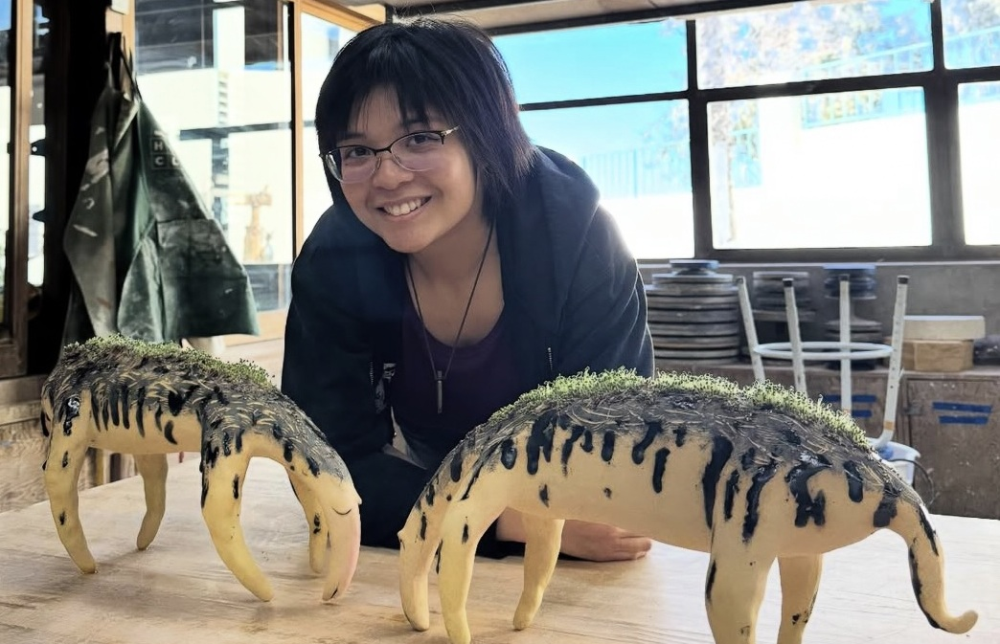
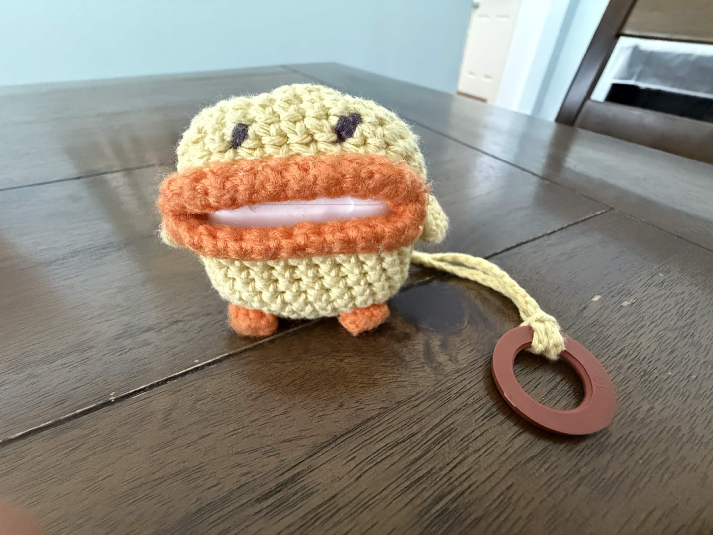
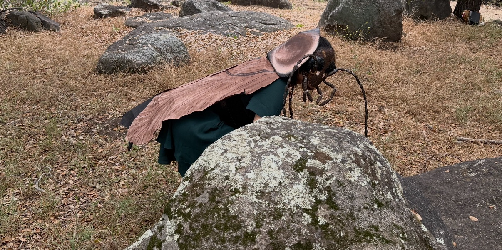
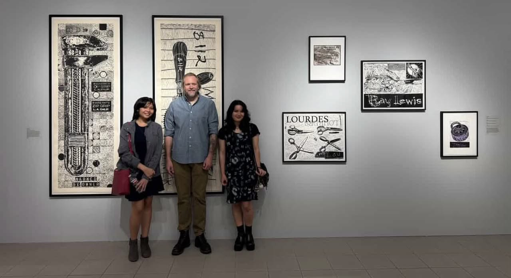
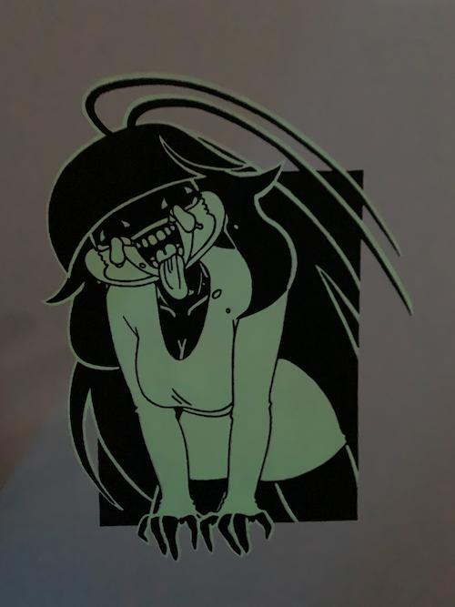
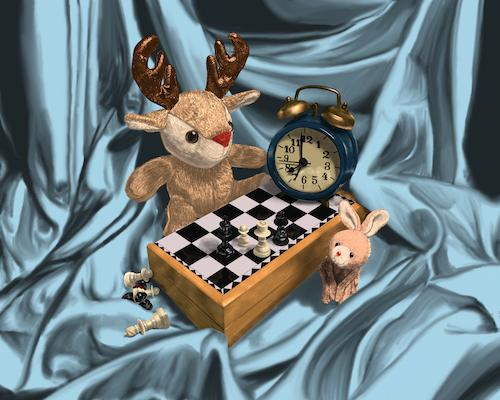
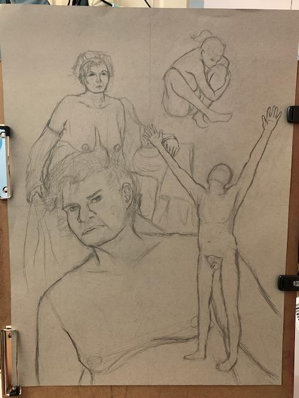
I was in my final semester at Grossmont college before I transferred to SDSU. This was a chaotic semester but if I thought this was bad, the worst was yet to come in SDSU LOL. I was taking a digital painting class, character design, figure drawing, and a printmaking class. In my digital painting class, we were basically allowed to paint what we wanted with loose prompts. I loved my character design class and I wish I was able to do more. We designed characters based on loose prompts the professor would give us which included the look of them as well as the way they acted. I especially loved my printmaking class as that was the most freeing class out of all of them. I was literally allowed to make what I wanted by very very loose parameters. I make a glow in the dark screen print of the character I developed in my character design class. In figure drawing, it was an ok class, we drew naked people. For our final in that class, we needed to choose from past drawings our favorite drawings and make a composition based on that.
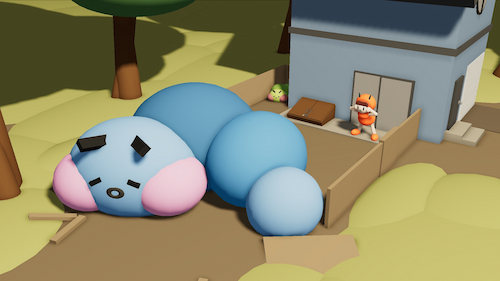
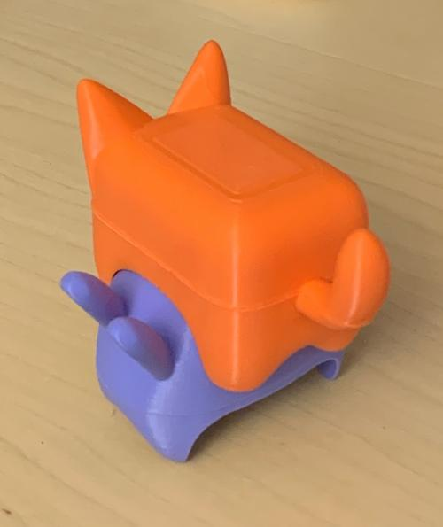
This was my first semester at SDSU! I was taking a 3D modeling class and the rest were for general education so i only made art for this class. My first piece here is a 3D modeled scene of a caterillar person seeing a giant caterpillar falling asleep on their fence, breaking it. This semester I also made a videogame idea that won over the SDSU Aztec Game Lab. Spoiler alert, it got screwed up, too much cooks in the kitchen kind of situation. I lost faith in the club, the game idea died despite me winning. Now I have this 3D model of my 2 main characters and the initial animation demo of the story. RIP my sweet Sigmund and Eggy.
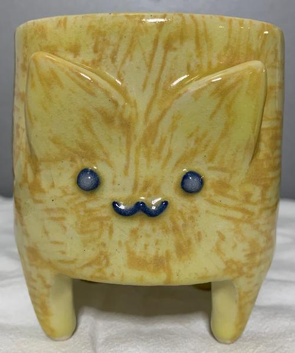
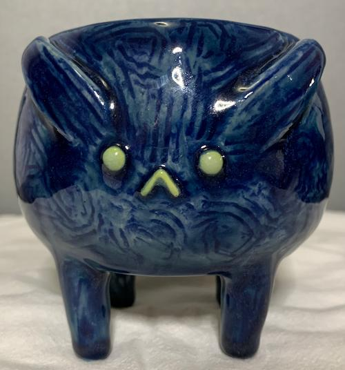
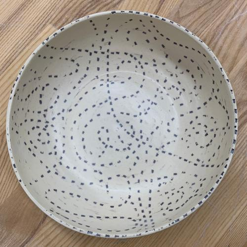
My first semester in ceramics. I have always wanted to do ceramics and these were the works I was most proud of for my first time. Of course I made mugs of Sigmund and Eggy, this was before the videogame dream died completely. I made a plate with a bunch of ants on it to represent Argentine ants. The bowl is part of a series on invasive bug species. The animations are from the experimental animation class, I really liked that class, definitely one of the best ones.
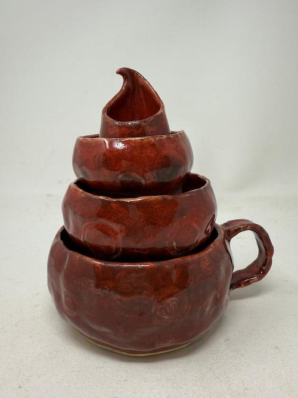
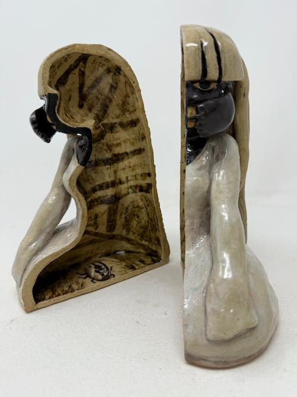
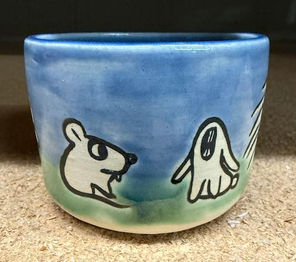
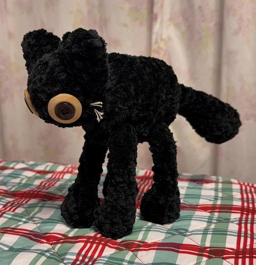
This semester I became more used to ceramics as a medium though I often got frustrated at the fact a lot of my works ended up non functional. I was upset with my poop cups (first image), while they stack, the glaze in some parts made it not food safe as well as hid a good portion of my design. I still love the concept of it though. As for the 2nd work, It was of Cara but as functional bookends semi themed to the book "The Metamorphosis". As for the last 2 images, I made the cup for the clay sale and it had many funny looking animals on it. The cat is something I crochetted for a friend where you can pull its head to elongate its neck and shorten its tail and the legs had a similar ability to them as well. This was also the semester in ceramics before everything went wrong, AKA I befriended the big friend group clique and a guy from there asked me out and the lead girl got jealous and he got bothered by her blah blah blah he left me when i was taken by an ambulance and he didnt seem to really care and so I broke up with him and then everything blew up just like my winning game idea blew up too :3
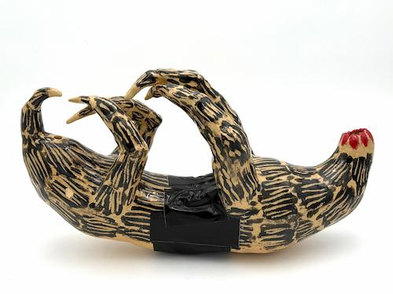
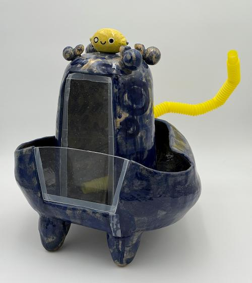
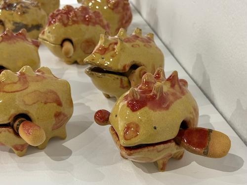
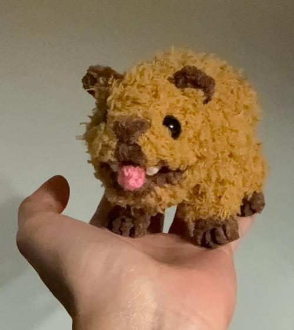
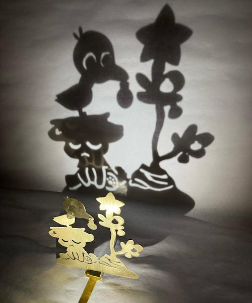
This semester my mom got breast cancer so my series of work for ceramics was based off of my experiences with illness which included not only my mom but my own as I grew up sickly. The works here are based on my mom's breast cancer then my experience with pnemonia and MRSA respectively. After those works, I crochetted a hyrax that you can pull its tongue super far out; It's for my friend who actually took this class before. The last work is a brass shadow caster depicting a Charlie Brown Christmas inspired theme but with my dog and a random bird.
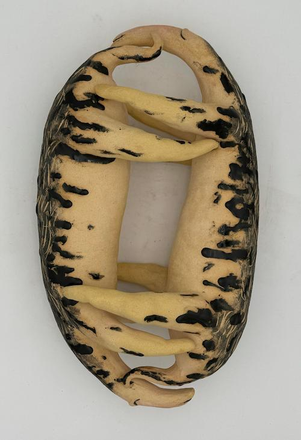
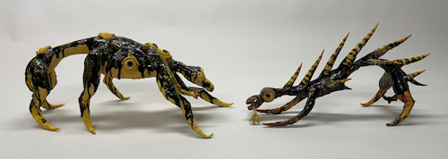
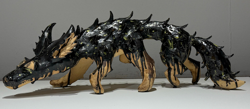
This semester I was tired of not only the clique groupd but also the class favoritism so my ceramics work this semester was on attachment styles. I feel I really pushed myself this semester and made work I was really proud of, not to mention the fact I had the ability on every critique to be as truthfully mean as possible but also to indirectly diss my ex. Still don't feel good about everythign that happened but i was happy I was able to do that. More has happned than I have described here but maybe someday I could write a horrible drama story on it haha. But besides that, the works I have here on that series are secure, Anxious and avoidant, and dysfunctional attachment respectively. The last one is much bigger than the first 2 but the images don't do justice. I am still really proud of my work here but I really ultimately realized that the end of this semester that I really prefer animation instead, it is just a shame SDSU doesn't have more animation classes.